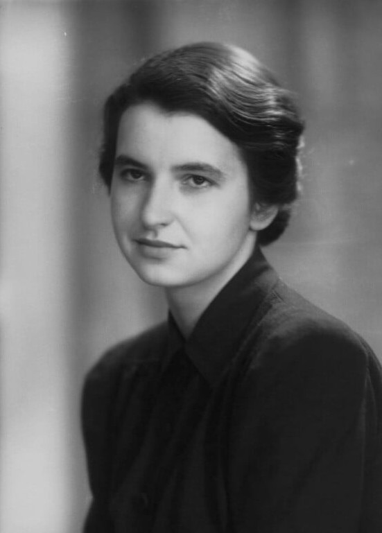

Infância e Educação
Rosalind Franklin nasceu em 1920 em Londres, Inglaterra. Desde jovem demonstrou grande interesse pela ciência e pela química. Rosalind Franklin nasceu em 25 de julho de 1920, em Londres, na Inglaterra, em uma família de boa condição financeira e que valorizava muito a educação. Desde jovem, mostrou grande inteligência e interesse pelos estudos, principalmente nas áreas de ciência e matemática. Estudou em escolas de alto nível e, posteriormente, ingressou na Universidade de Cambridge, onde se formou em Química.

Carreira Científica
Rosalind Franklin (1920-1958) foi uma cientista britânica responsável pela célebre "foto 51", a primeira a registrar nitidamente a estrutura do DNA. Além disso, a química também se dedicou a estudos sobre carvão mineral, RNA e vírus. Suas descobertas foram essenciais para se conseguir determinar a forma em dupla hélice do DNA, sigla para Ácidos Desoxirribonucléico. Entretanto, seu nome não entrou para a história como autora deste feito, pois três cientistas pegaram seus estudos sem permissão, terminaram a pesquisa e levaram a fama, recebendo o Prêmio Nobel de Medicina.Ela trabalhou com cristalografia por raios-X, técnica que permitiu registrar imagens da estrutura do DNA.